کمرکلا، نگین طبیعت بکر در چهاردانگه
روستای کمرکلا در حدود ۱۰۰ کیلومتری جنوب شهرستان ساری و در بخش چهاردانگه استان مازندران واقع شده است.
این روستا در دهستان نرمابدوسر قرار دارد و با روستاهای سعیدآباد و ذکریاکلا همسایه است.
کمرکلا با طبیعتی بکر، جنگلهای سرسبز، چشمههای زلال، کوهستانهای زیبا و آبوهوای مطبوع، یکی از مناطق ارزشمند و دیدنی چهاردانگه محسوب میشود.
مردم روستا به زبان مازنی (طبری) سخن میگویند و عمده فعالیت اقتصادی آنان بر پایه کشاورزی و دامداری است.
بر اساس آثار تاریخی بهجامانده از قلعه تاریخی روستای کمرکلا، قدمت این منطقه به حدود ۳۰۰ سال پیش از میلاد مسیح میرسد.
وجود بقایای قلعه تاریخی متعلق به دوره اشکانیان نشاندهنده پیشینه کهن و اهمیت تاریخی این منطقه در گذشته است.
نام «کمرکلا» از دو واژه «کمر» و «کلا» تشکیل شده و به معنای «آبادی واقع در دامنه کوه» است.
این روستا با حفظ اصالت فرهنگی، آداب و رسوم محلی و گویش مازنی، یکی از روستاهای ارزشمند منطقه چهاردانگه محسوب میشود.
جنگل میسی یکی از زیباترین و بکرترین مناطق طبیعی روستای کمرکلا است. این جنگل با پوشش انبوه درختان، چشماندازهای کوهستانی، هوای پاک و طبیعت دستنخورده، مقصدی محبوب برای طبیعتگردان به شمار میرود.
در فصل بهار و تابستان سرسبزی چشمنواز جنگل و در پاییز رنگهای زیبای درختان، جلوهای کمنظیر به این منطقه میبخشد.
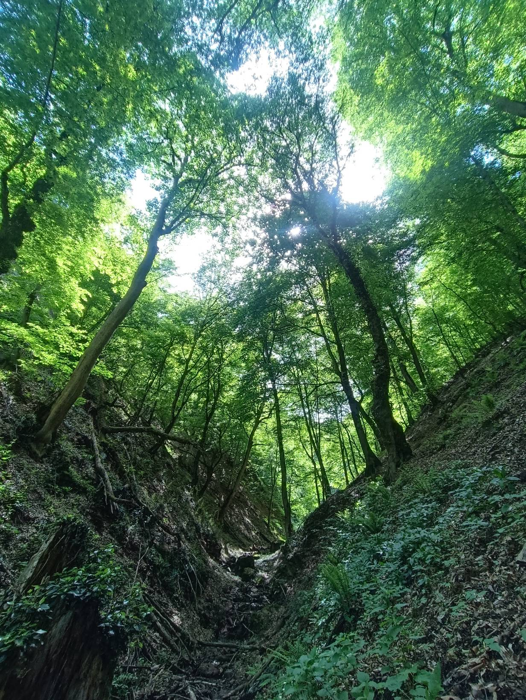
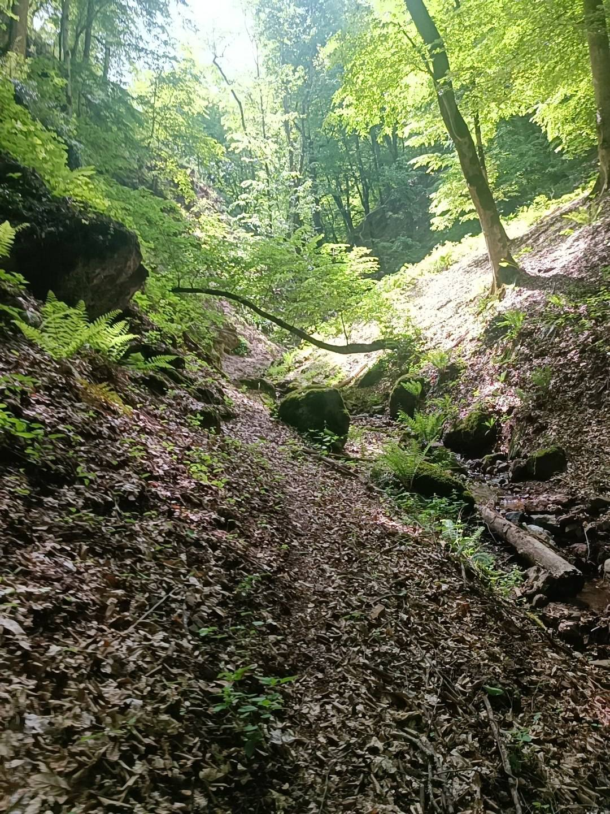
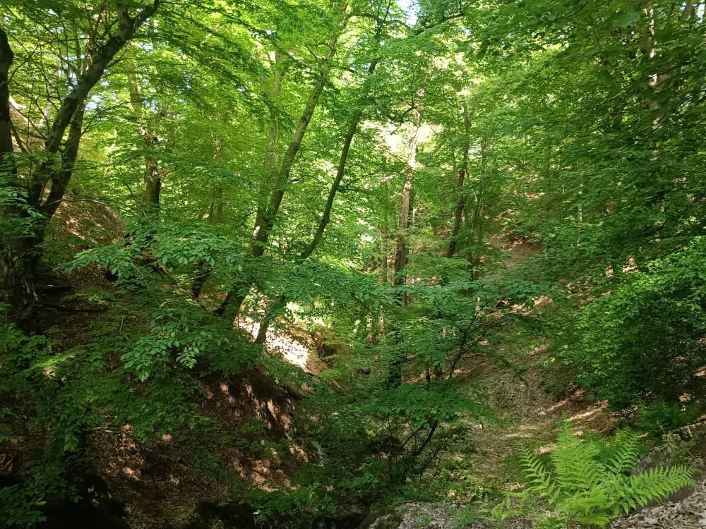
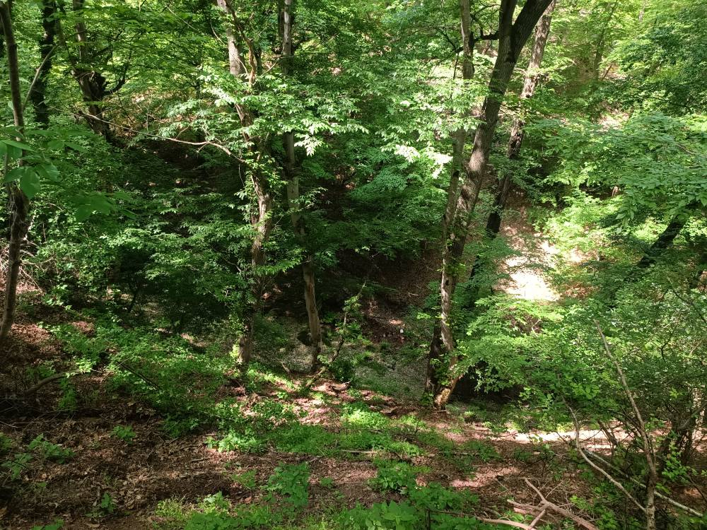
امامزاده مهدی (ع) یکی از اماکن مذهبی و معنوی روستای کمرکلا است که در محیطی آرام و سرسبز قرار گرفته و هر ساله میزبان زائران و گردشگران بسیاری از نقاط مختلف استان مازندران میباشد.
قرار گرفتن این مکان مقدس در دل طبیعت زیبای منطقه، جلوهای معنوی و آرامشبخش به آن بخشیده است.
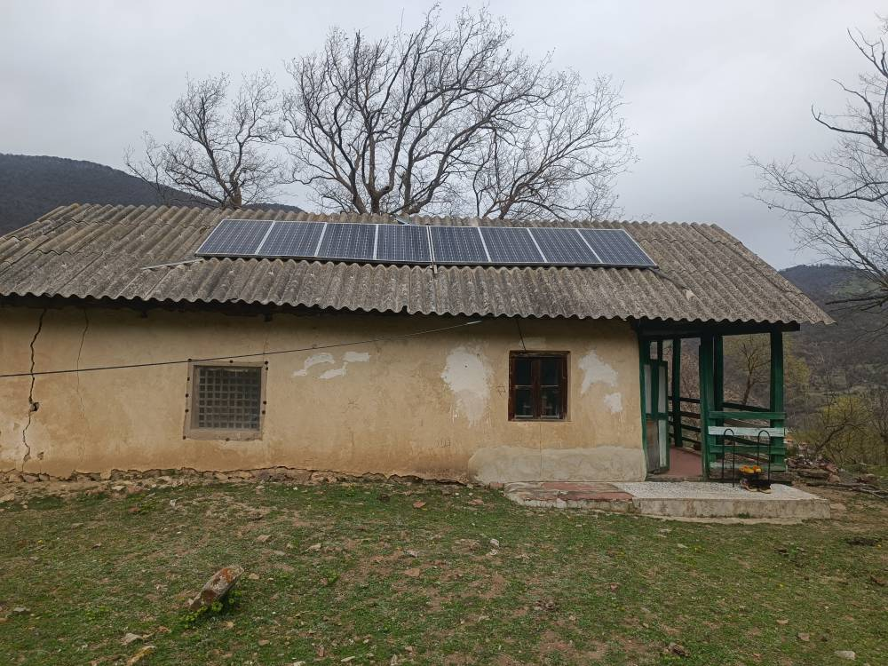
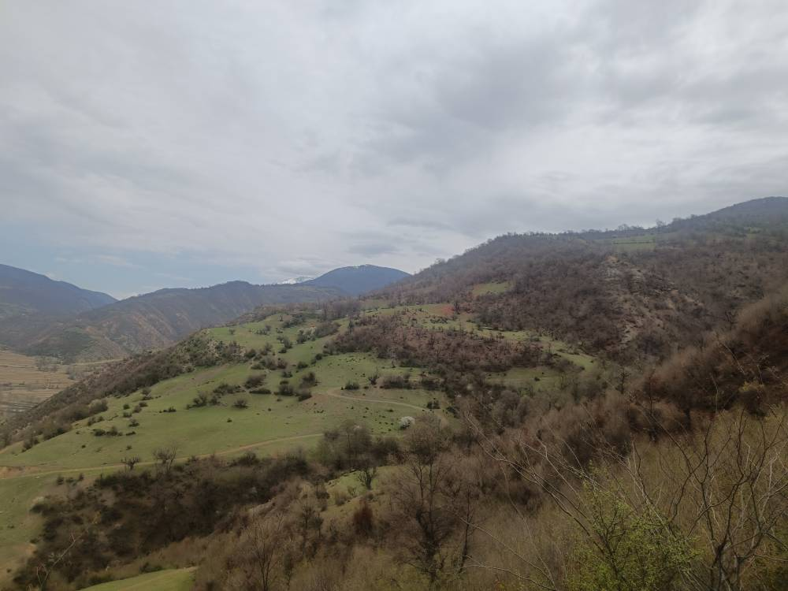
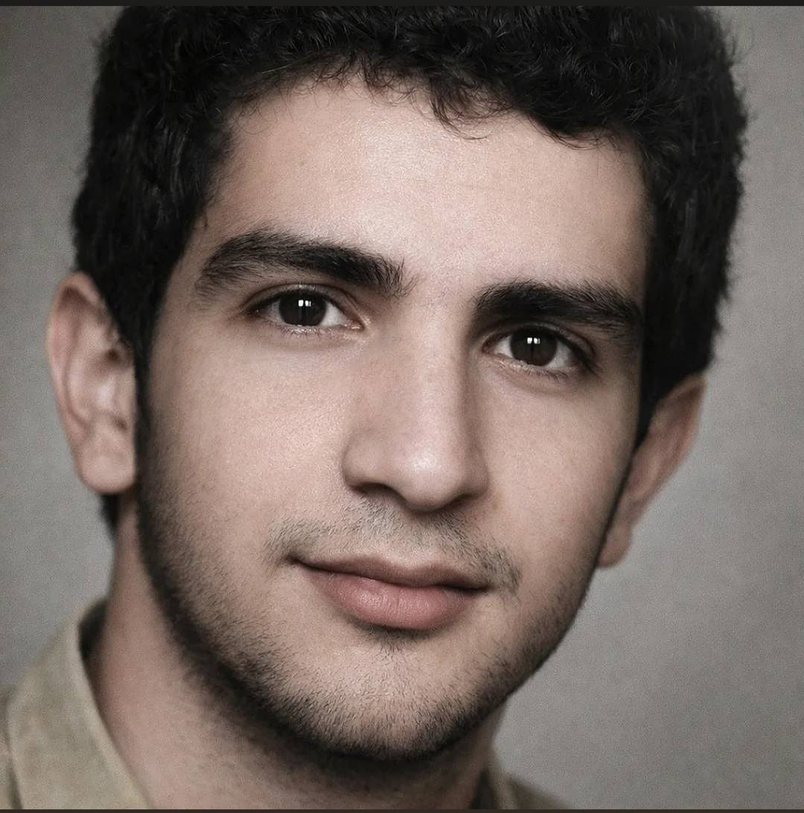
شهید سیدمهدی موسوی کمرکلایی از فرزندان پرافتخار روستای کمرکلا است که در راه دفاع از میهن اسلامی و ارزشهای والای انسانی به درجه رفیع شهادت نائل آمد.
نام و یاد این شهید بزرگوار همواره در قلب مردم روستا زنده است و اهالی کمرکلا با افتخار یاد و خاطره ایشان را گرامی میدارند.
فرهنگ ایثار، فداکاری و مقاومت شهدا برای همیشه چراغ راه نسلهای آینده خواهد بود.
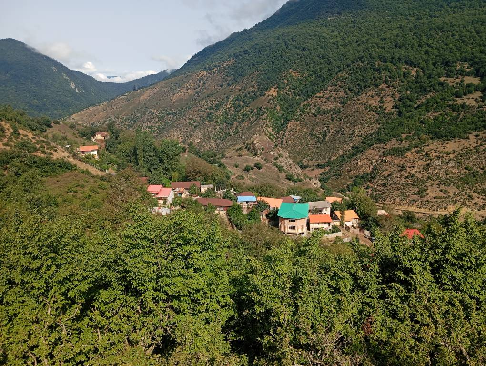
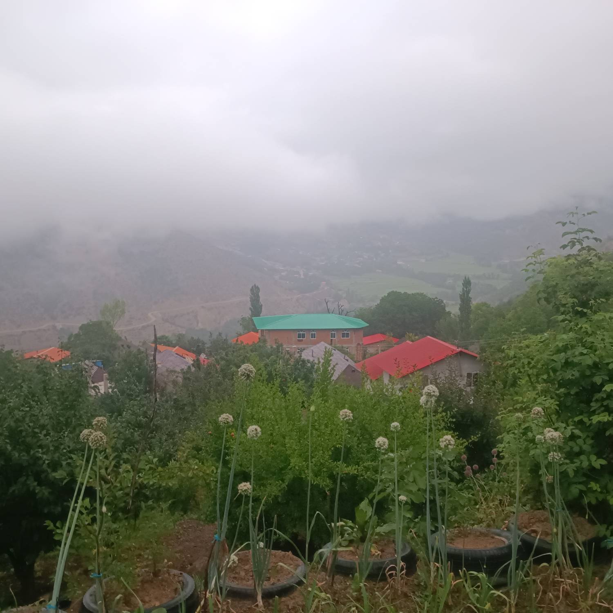
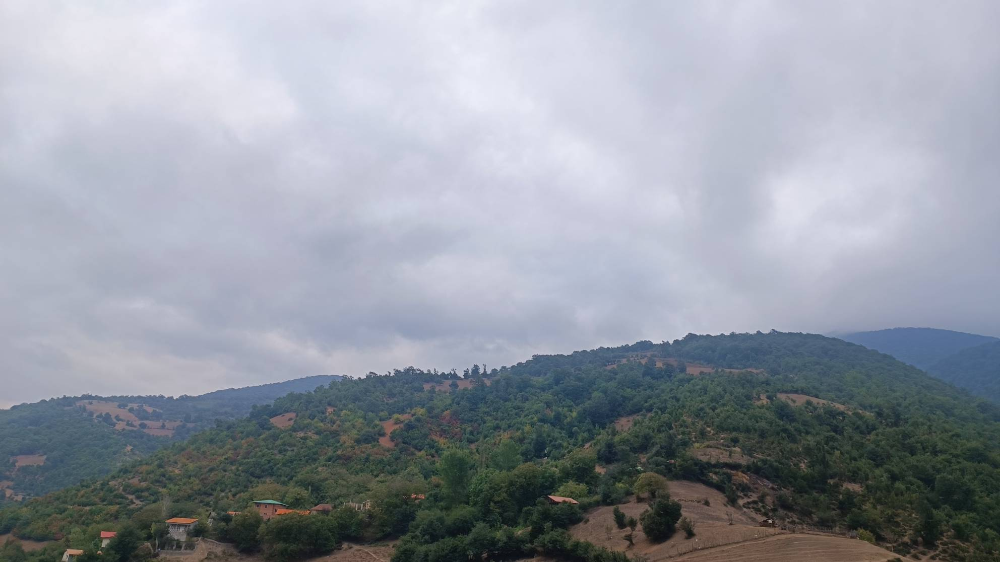
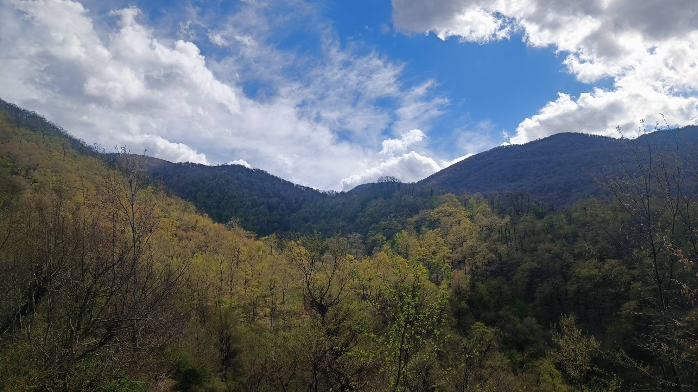
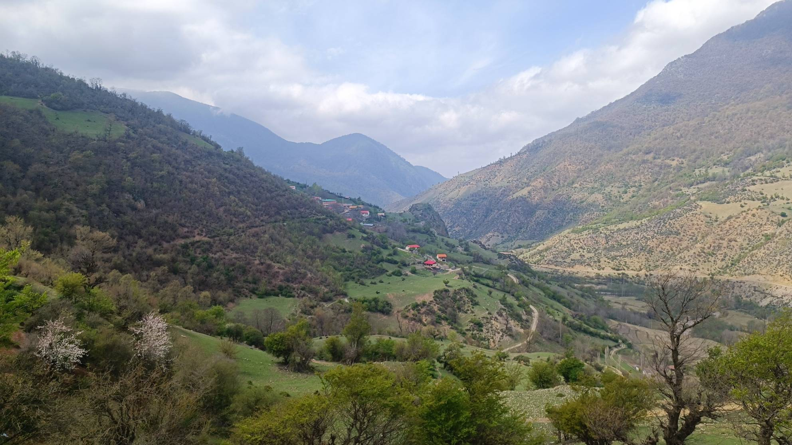
برای مشاهده موقعیت روستای کمرکلا در گوگل مپ روی دکمه زیر کلیک کنید.
📍 مشاهده در گوگل مپ
شماره تماس:
09119143106
@kamar_kola